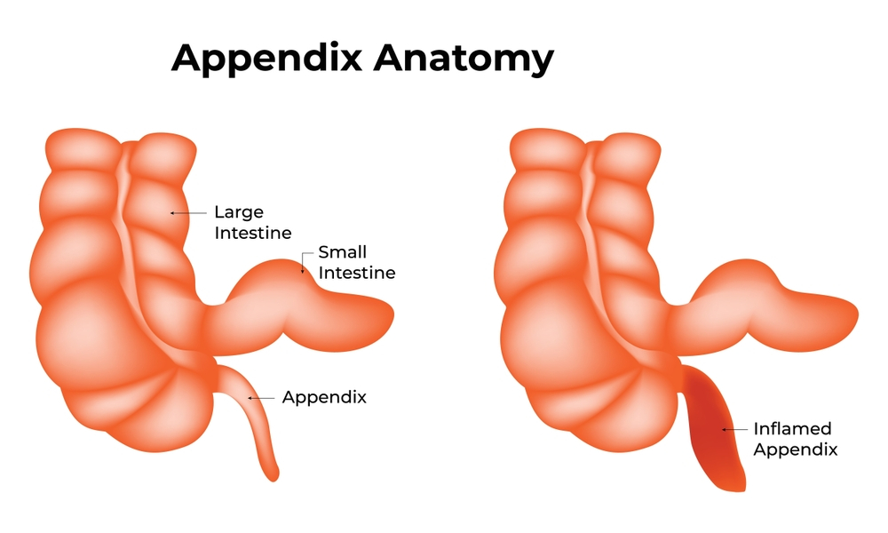
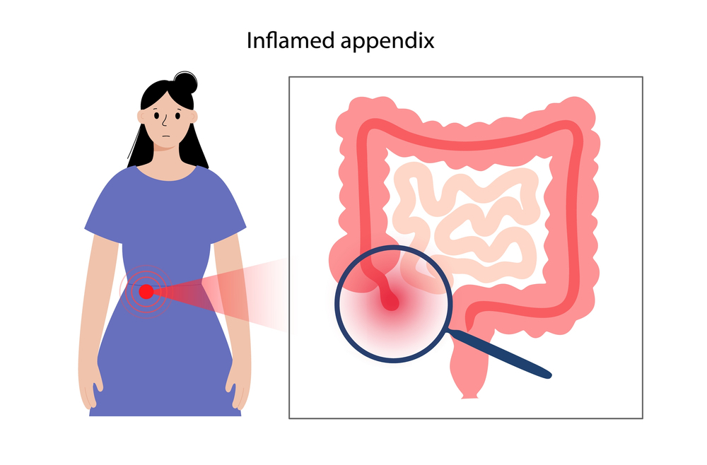

Appendix surgery, medically referred to as appendectomy, is one of the most common
emergency surgeries performed worldwide. Despite its routine nature, patients frequently ask, “How many days to recover from appendix surgery?” Knowing the expected recovery time helps patients plan their return to work, school, and daily activities with realistic expectations.
As someone who has performed hundreds of successful procedures, I, Dr. Atul Peters, offer my insights on the typical healing timeline and how patients can ensure a smooth, complication-free recovery. If you’re considering or have recently undergone Appendix Surgery in Delhi, this guide will serve as your comprehensive roadmap.
What is Appendix Surgery?

Appendectomy is the surgical removal of the appendix, a small part of the large intestine. The procedure is most often performed to treat appendicitis, a painful, inflamed, and potentially life-threatening condition.
There are two types of appendix surgeries:
- Laparoscopic Appendectomy: Minimally invasive, involves 3 small incisions.
- Open Appendectomy: Involves a larger single incision, usually reserved for complicated cases.
Both types are available at top medical centers offering Appendix Surgery, with the choice depending on the patient’s condition and the surgeon’s recommendation.
So, How Many Days to Recover from Appendix Surgery?
The short answer: 7 to 21 days, depending on the surgical method and the individual’s health.
1. Laparoscopic Surgery Recovery
- Hospital stay: 1–2 days
- Back to work or school: 5–7 days
- Full recovery: 2 weeks
2. Open Surgery Recovery
- Hospital stay: 3–4 days
- Back to work or school: 10–14 days
- Full recovery: 3–4 weeks
These timelines are averages. Factors like age, overall health, and complications (e.g., a burst appendix or infected abdomen[2] ) can impact the recovery period.
What to Expect During Recovery
Recovery doesn’t end when you leave the hospital. Here’s what to expect in the days following Appendix Surgery in Delhi:
First 3 Days:
- Mild to moderate pain at incision sites
- Limited movement
- Need for rest and pain management
Days 4 to 7:
- Improved energy levels
- Ability to walk and perform light tasks
- Gradual return to soft foods
Week 2 and Beyond:
- Resume normal diet
- Return to work or school
- Continue light exercise
Patients should avoid heavy lifting, intense workouts, and smoking during this period.
Tips for a Speedy Recovery

1. Follow Doctor’s Instructions: Medication, wound care, and activity restrictions must be taken seriously.
2. Stay Hydrated and Eat Light: Soups, fruits, and soft foods help your digestive system adjust post-surgery.
3. Gentle Movement: Walking daily boosts circulation and prevents clots.
4. Avoid Smoking and Alcohol: These can delay healing.
5. Watch for Warning Signs: Fever, pus from the incision, or severe pain should be reported immediately.
Return to Normal Activities
A common question beyond recovery is: “When can I resume normal activities?”
- Driving: 1 week post-laparoscopy, 2–3 weeks post-open surgery
- Work or school: 1–2 weeks, depending on surgery type
- Exercise: Light walking after 3–5 days; gym workouts after 3–4 weeks
Every patient’s timeline is unique, so always follow your surgeon’s advice.
Complications That Can Delay Recovery
While appendectomy is safe, complications may affect how many days to recover from appendix surgery. These include:
- Wound infection
- Internal abscess
- Prolonged pain or fever
In such cases, healing may take 4–6 weeks. Early detection and treatment minimize the impact.
Follow-Up Appointments
Post-operative reviews are crucial. At our center for Appendix Surgery in Delhi, follow-up visits occur:
- Within 5–7 days to check the incision
- At 2 weeks for stitch removal (if non-absorbable)
- At 4 weeks, to ensure full recovery
Additional imaging or lab tests may be needed if symptoms persist.
Life After an Appendectomy
The good news? You can live a perfectly normal life without your appendix. Long-term dietary or lifestyle changes are rarely necessary. However, patients are advised to:
- Maintain a balanced diet
- Exercise regularly
- Avoid junk food and excess alcohol
Advanced Appendix Surgery by Dr. Atul Peters!
Contact Now!
Book Your Appointment
Final Thoughts: Recovery is Within Reach
So, how many days to recover from appendix surgery? The answer lies in multiple factors—surgery type, patient health, and post-op care. Most people feel “back to normal” in about 2–3 weeks. As Dr. Atul Peters, I emphasize early treatment, skilled surgery, and comprehensive aftercare to ensure the smoothest recovery possible. If you or a loved one is facing appendicitis, don’t delay.
Frequently Asked Questions
1. How many days to recover from appendix surgery?
The average recovery period is 10–14 days after laparoscopic appendectomy and up to 6 weeks for open surgery. Recovery may take longer if complications such as a burst appendix or infection occur.
2. What factors can slow down recovery from appendix surgery?
Factors include age, the type of surgery (laparoscopic vs. open), overall health condition, presence of complications, and whether the patient follows post-op instructions. All of these directly impact the recovery from appendix surgery.
3. Can I walk after appendix surgery?
Yes, light walking is encouraged within 24 hours post-surgery to improve circulation and reduce the risk of blood clots. Avoid strenuous activities or lifting until cleared by your doctor.
4. When can I return to work or school?
Patients who undergo laparoscopic surgery can often return to non-physical work or school in 7–10 days. For open surgery, expect to wait at least 3–4 weeks, depending on the physical demands of your job.
5. How will I know if something is wrong during recovery?
Contact your doctor immediately if you experience high fever, persistent nausea, increasing pain, redness or pus at the incision, or inability to pass gas or stool. These could indicate complications that may extend the recovery from appendix surgery.
Recommended Further Reading
Have Personal Health Questions?
Consult with Dr. Atul Peters and our expert multidisciplinary team at Max Smart Super Speciality Hospital, Saket, New Delhi.
Book Your Consultation